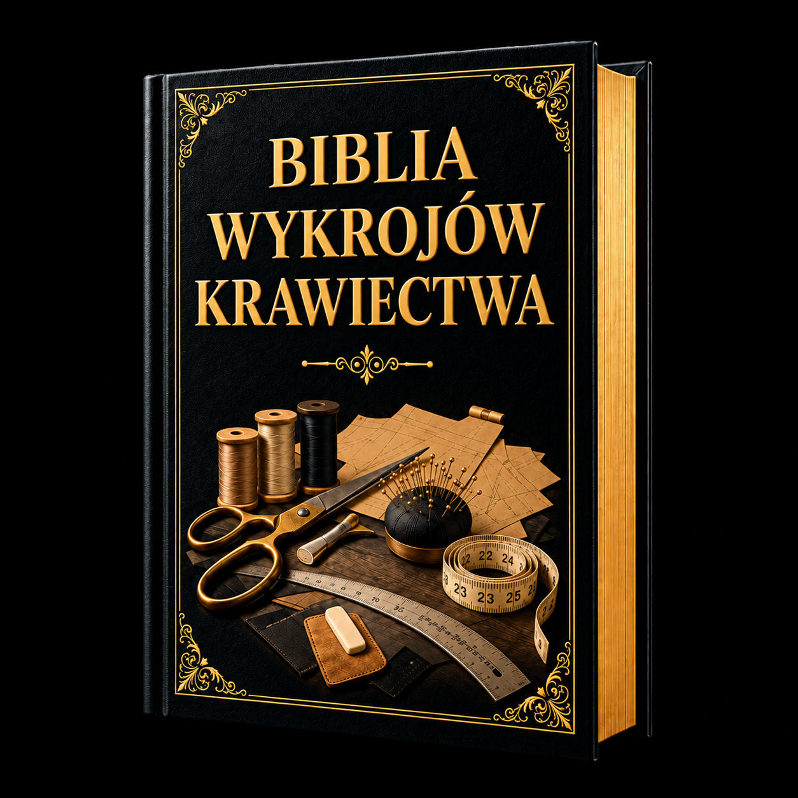

Ponad 150 gotowych wykrojów odzieżowych — kompletny katalog z opisami, tabelami rozmiarów, poziomami trudności i wskazówkami do szycia.

Wszystko, co musisz wiedzieć, żeby wybrać wykrój, dobrać materiał i zacząć szyć.
Ten katalog to twoja mapa krawiecka. Każdy z ponad 150 wykrojów ma opis konstrukcji, sugerowane tkaniny, poziom trudności i wskazówki, które pomogą ci uszyć ubranie od początku do końca.
| Element | Co zawiera |
|---|---|
| Nazwa i numer | Unikalna nazwa projektu + numer katalogowy |
| Poziom trudności | Początkujący · Średniozaawansowany · Zaawansowany |
| Opis | Jak wygląda gotowe ubranie, główne cechy konstrukcyjne |
| Elementy wykroju | Lista części do wycięcia (przód, tył, rękaw itp.) |
| Zalecane tkaniny | Jakie materiały najlepiej się sprawdzą |
| Zużycie materiału | Ile tkaniny potrzebujesz (dla tkaniny 150 cm, rozmiar M) |
| Dodatki | Zamki, guziki, wkład, gumka — co kupić oprócz tkaniny |
| Kluczowe techniki | Jakie umiejętności wykorzystasz |
| Wskazówki | Praktyczne porady specyficzne dla tego modelu |
Proste kształty, minimalna ilość elementów, bez zamków lub z zamkiem zwykłym. Idealne na pierwsze projekty. Szwy proste, obrębianie podstawowe.
Zaszewki, zamki kryte, kołnierze proste, kieszenie wpuszczane. Wymagają precyzji i wcześniejszego doświadczenia z 3-5 prostszymi projektami.
Podszewka, kołnierze z podkołnierzem, rękawy wpuszczane, dopasowanie do figury. Dla osób z solidnym doświadczeniem krawieckim.
Wymiary ciała w centymetrach — porównaj ze swoimi, żeby wybrać odpowiedni rozmiar wykroju.
Zawsze wybieraj rozmiar na podstawie swoich rzeczywistych wymiarów ciała, nie na podstawie rozmiaru z metki ubrania kupionego w sklepie. Rozmiary sklepowe różnią się między markami — te tabele są uniwersalnym standardem krawieckim.
| Wymiar | XS (34) | S (36) | M (38) | L (40) | XL (42) | XXL (44) | 3XL (46) | 4XL (48) |
|---|---|---|---|---|---|---|---|---|
| Obwód biustu | 80 | 84 | 88 | 92 | 96 | 100 | 104 | 110 |
| Obwód talii | 62 | 66 | 70 | 74 | 78 | 82 | 86 | 92 |
| Obwód bioder | 88 | 92 | 96 | 100 | 104 | 108 | 112 | 118 |
| Długość pleców | 39 | 39.5 | 40 | 40.5 | 41 | 41.5 | 42 | 42.5 |
| Szerokość ramion | 37 | 38 | 39 | 40 | 41 | 42 | 43 | 44 |
| Długość rękawa | 58 | 59 | 60 | 60.5 | 61 | 61.5 | 62 | 62 |
| Obwód nadgarstka | 15 | 15.5 | 16 | 16.5 | 17 | 17.5 | 18 | 18.5 |
| Rozmiar | Wzrost (cm) | Wiek orientacyjny | Obwód klatki | Obwód talii |
|---|---|---|---|---|
| 86 | 81-86 | 12-18 mies. | 51 | 49 |
| 92 | 87-92 | 18-24 mies. | 53 | 50 |
| 98 | 93-98 | 2-3 lata | 55 | 51 |
| 104 | 99-104 | 3-4 lata | 57 | 52 |
| 110 | 105-110 | 4-5 lat | 59 | 53 |
| 116 | 111-116 | 5-6 lat | 61 | 54 |
| 122 | 117-122 | 6-7 lat | 63 | 55 |
| 128 | 123-128 | 7-8 lat | 65 | 57 |
| 134 | 129-134 | 8-9 lat | 67 | 59 |
| 140 | 135-140 | 9-10 lat | 69 | 61 |
Od prostego topu na ramiączkach po elegancką bluzkę z rękawami biskupimi.
Prosty top z cienkim ramiączkami, dekolt prosty (bateau), luźny krój do bioder. Idealny pierwszy projekt — 4 elementy, zero zamków.
| Elementy wykroju | Tkaniny | Zużycie (M, 150 cm) | Dodatki |
|---|---|---|---|
| Przód (1) · Tył (1) · Ramiączko (2) | Jersey bawełniany, wiskoza | 0.9 m | Żadne |
Techniki: szew boczny, obrębianie dzianiny (igła dwuigłowa lub zygzak), obszycie dekoltu taśmą ukośną.
Luźny top z obniżoną linią ramion, krótki rękaw „spadający", dekolt okrągły. Wygodny i szybki do uszycia.
| Elementy wykroju | Tkaniny | Zużycie (M, 150 cm) | Dodatki |
|---|---|---|---|
| Przód (1) · Tył (1) · Rękaw (2) · Dekolt (1, po skosie) | Jersey, dresówka cienka, len | 1.3 m | Żadne |
Techniki: szew prosty, obszycie dekoltu ściągaczem lub taśmą.
Bluzka z krótkim rękawem, prosty dekolt, ściągnięta gumką u dołu — tworzy delikatne marszczenie na talii.
| Elementy wykroju | Tkaniny | Zużycie (M, 150 cm) | Dodatki |
|---|---|---|---|
| Przód (1) · Tył (1) · Rękaw (2) | Bawełna, wiskoza, len lekki | 1.2 m | Gumka 2 cm × 70 cm |
Techniki: tunel na gumkę, obszycie rękawów podwójnym podwinięciem.
Klasyczny dekolt V z obszycie lamówką. Krótki rękaw, krój prosty z lekkim zwężeniem na talii.
| Elementy wykroju | Tkaniny | Zużycie (M, 150 cm) | Dodatki |
|---|---|---|---|
| Przód (2 · lewy i prawy) · Tył (1) · Rękaw (2) · Lamówka dekoltu (1, po skosie) | Bawełna, krepa, szyfon (z podszewką) | 1.3 m | Żadne |
Techniki: obszycie dekoltu V lamówką, zaszewki piersiowe (jeśli krój dopasowany).
Luźna bluzka z marszczonymi rękawami i dekoltem na gumkę. Styl folklorystyczny, wygodna i romantyczna.
| Elementy wykroju | Tkaniny | Zużycie (M, 150 cm) | Dodatki |
|---|---|---|---|
| Przód (1) · Tył (1) · Rękaw (2, marszczone) · Mankiet (2) | Bawełna, batyst, muślin, len | 1.5 m | Gumka 1 cm × 120 cm |
Techniki: marszczenie rękawów, tunel na gumkę w dekolcie.
Kopertowy przód z wiązaniem na boku. Dekolt V, rękaw 3/4. Uniwersalna — elegancka i codzienna.
| Elementy wykroju | Tkaniny | Zużycie (M, 150 cm) | Dodatki |
|---|---|---|---|
| Przód prawy (1) · Przód lewy (1) · Tył (1) · Rękaw (2) · Pasek wiązania (2) | Jersey, krepa, wiskoza, jedwab | 1.8 m | Żadne |
Techniki: szycie kopertowego dekoltu, wykończenie zakładki, obszycie brzegów.
Szeroki rękaw rozszerzający się od łokcia, ścięty mankietem z guzikiem. Dekolt okrągły, krój prosty.
| Elementy wykroju | Tkaniny | Zużycie (M, 150 cm) | Dodatki |
|---|---|---|---|
| Przód (1) · Tył (1) · Rękaw (2, rozszerzany) · Mankiet (2) | Szyfon, krepa, jedwab, wiskoza | 1.7 m | 2 guziki (mankiety) |
Techniki: marszczenie rękawa w mankiet, dziurki na guziki, wszywanie mankietu.
Dopasowany gorset z falbanką (peplum) poniżej talii. Zamek z tyłu, rękaw krótki.
| Elementy wykroju | Tkaniny | Zużycie (M, 150 cm) | Dodatki |
|---|---|---|---|
| Przód gorsetu (2) · Tył gorsetu (2) · Peplum przód (1) · Peplum tył (1) · Rękaw (2) | Bawełna, gabardyna lekka, krepa | 1.5 m | Zamek kryty 30 cm · Wkład usztywniający |
Techniki: zaszewki, zamek kryty, łączenie gorsetu z peplum, wszywanie rękawów.
Prosty top bez ramiączek z gumką u góry. Letni, szybki do uszycia.
| Elementy wykroju | Tkaniny | Zużycie (M, 150 cm) | Dodatki |
|---|---|---|---|
| Prostokąt (1, na złamaniu) | Jersey, bawełna z elastanem | 0.5 m | Gumka 2 cm × 70 cm |
Bluzka z pionowymi falbanami na przodzie. Rękaw 3/4, dekolt okrągły, zapięcie z tyłu na guziki lub zamek.
| Elementy wykroju | Tkaniny | Zużycie (M, 150 cm) | Dodatki |
|---|---|---|---|
| Przód (2) · Tył (2) · Rękaw (2) · Falbana (2-4, po skosie) | Szyfon, krepa, jedwab | 2.0 m | Zamek kryty 50 cm lub 5 guzików |
Krótki top do talii, prosty dekolt, krótki rękaw. Minimalna ilość tkaniny, szybki efekt.
| Elementy wykroju | Tkaniny | Zużycie (M, 150 cm) | Dodatki |
|---|---|---|---|
| Przód (1) · Tył (1) · Rękaw (2) | Jersey, rib, dresówka | 0.7 m | Żadne |
Elegancka bluzka z otwartymi plecami do łopatek, zapinanym guzikiem u góry. Przód gładki z zaszewkami.
| Elementy wykroju | Tkaniny | Zużycie (M, 150 cm) | Dodatki |
|---|---|---|---|
| Przód (1) · Tył lewy (1) · Tył prawy (1) · Rękaw (2) · Obszycie dekoltu (2) | Krepa, jedwab, satyna | 1.5 m | 1 guzik · Wkład na obszycie |
Bluzka z szerokim paskiem na talii wiązanym na kokardę z tyłu. Rękaw dzwonkowy. Japońska inspiracja.
| Elementy wykroju | Tkaniny | Zużycie (M, 150 cm) | Dodatki |
|---|---|---|---|
| Przód (1) · Tył (1) · Rękaw dzwon (2) · Pasek obi (2) · Wiązanie (2) | Krepa, wiskoza, len | 1.8 m | Wkład usztywniający na pasek |
Top wiązany na karku, odkryte ramiona. Idealny na lato.
| Elementy wykroju | Tkaniny | Zużycie (M, 150 cm) | Dodatki |
|---|---|---|---|
| Przód (1) · Tył (1) · Wiązanie na kark (2, po skosie) | Bawełna, len, jersey | 0.8 m | Żadne |
Szeroki dekolt „łódka" (bateau) odsłaniający obojczyki, krój prosty, rękaw 3/4.
| Elementy wykroju | Tkaniny | Zużycie (M, 150 cm) | Dodatki |
|---|---|---|---|
| Przód (1) · Tył (1) · Rękaw (2) · Obszycie dekoltu (2) | Krepa, wiskoza, jersey gruby | 1.4 m | Żadne |
Dopasowany gorset z fiszbinami, dekolt prosty, zapięcie na haftki z tyłu. Element bielizny wierzchniej.
| Elementy wykroju | Tkaniny | Zużycie (M, 150 cm) | Dodatki |
|---|---|---|---|
| Przód (4 panele) · Tył (4 panele) · Podszewka (8 paneli) | Bawełna gruba, tafta, satyna + podszewka bawełniana | 1.5 m tkanina + 1.5 m podszewka | 8-12 fiszbinów · Haftki · Oczka · Wkład usztywniający |
Bluzka ze spuszczonymi ramionami, gumka wokół dekoltu i rąk. Luźny krój, romantyczny styl.
| Elementy wykroju | Tkaniny | Zużycie (M, 150 cm) | Dodatki |
|---|---|---|---|
| Przód (1) · Tył (1) · Rękaw (2) · Tunel na gumkę | Bawełna, len, wiskoza | 1.5 m | Gumka 1 cm × 90 cm |
Prosta tunika do połowy uda, boczne rozcięcia, dekolt okrągły. Wygodna na co dzień z legginsami.
| Elementy wykroju | Tkaniny | Zużycie (M, 150 cm) | Dodatki |
|---|---|---|---|
| Przód (1) · Tył (1) · Rękaw (2) | Jersey, wiskoza, len, bawełna | 1.6 m | Żadne |
Elegancka bluzka z szarfą/kokardą przy dekolcie (pussy bow). Rękaw długi z mankietem. Styl biurowy.
| Elementy wykroju | Tkaniny | Zużycie (M, 150 cm) | Dodatki |
|---|---|---|---|
| Przód (2) · Tył (1) · Rękaw (2) · Mankiet (2) · Szarfa (1) | Krepa, jedwab, satyna | 1.9 m | 6 guzików (przód + mankiety) |
Top na jedno ramię z drapowaniem po skosie. Efektowny, wieczorowy.
| Elementy wykroju | Tkaniny | Zużycie (M, 150 cm) | Dodatki |
|---|---|---|---|
| Przód (1) · Tył (1) · Ramiączko (1) · Drapowanie (1, po skosie) | Jersey, krepa, jedwab | 1.3 m | Żadne |
Rękaw raglan (szew od dekoltu do pachy po skosie). Swobodny krój, łatwy do uszycia, wygodny.
| Elementy wykroju | Tkaniny | Zużycie (M, 150 cm) | Dodatki |
|---|---|---|---|
| Przód (1) · Tył (1) · Rękaw raglan (2) | Jersey, dresówka, polar | 1.4 m | Żadne |
Krótki top z dwoma paskami wiązanymi na kokardę na przodzie. Letni, szybki projekt.
| Elementy wykroju | Tkaniny | Zużycie (M, 150 cm) | Dodatki |
|---|---|---|---|
| Przód lewy (1) · Przód prawy (1) · Tył (1) | Bawełna, len, wiskoza | 0.9 m | Żadne |
Od prostej sukienki na co dzień po elegancką suknię wieczorową z podszewką.
Prosty krój bez talii, dekolt okrągły, krótki rękaw. Klasyka lat 60. — szybka i wygodna.
| Elementy | Tkaniny | Zużycie | Dodatki |
|---|---|---|---|
| Przód (1) · Tył (2) · Rękaw (2) · Obszycie dekoltu (2) | Bawełna, len, gabardyna lekka | 1.6 m | Zamek kryty 50 cm |
Koszulowy kołnierz, guziki na przodzie do pasa, pasek w talii, spódnica rozkloszowana.
| Elementy | Tkaniny | Zużycie | Dodatki |
|---|---|---|---|
| Przód (2) · Tył (1) · Rękaw (2) · Kołnierz (2) · Mankiet (2) · Pasek (1) · Spódnica (2) | Bawełna, len, chambray | 2.8 m | 8-10 guzików |
Kopertowy przód z wiązaniem w talii, dekolt V. Uniwersalna — pasuje na każdą figurę.
| Elementy | Tkaniny | Zużycie | Dodatki |
|---|---|---|---|
| Przód lewy (1) · Przód prawy (1) · Tył (1) · Rękaw (2) · Wiązanie (2) · Spódnica (2) | Jersey, krepa, wiskoza | 2.5 m | Żadne |
Gorset prosty, spódnica marszczona w talii. Elastyczny tunel lub widoczne marszczenie.
| Elementy | Tkaniny | Zużycie | Dodatki |
|---|---|---|---|
| Gorset przód (1) · Gorset tył (2) · Spódnica (1, prostokąt 2× obwód bioder) | Bawełna, wiskoza, len | 2.5 m | Zamek kryty 50 cm |
Dopasowana sylwetka do kolan, zaszewki piersiowe i taliowe, zamek z tyłu. Elegancka, biurowa.
| Elementy | Tkaniny | Zużycie | Dodatki |
|---|---|---|---|
| Przód (1) · Tył (2) · Rękaw (2) · Obszycie dekoltu (2) · Podszewka przodu (1) · Podszewka tyłu (2) | Gabardyna, krepa gruba, tkanina garniturowa | 1.6 m + 1.4 m podszewka | Zamek kryty 55 cm · Wkład usztywniający |
Długa do kostek, prosty krój, ramiączka, dekolt prosty. Letnia, plażowa.
| Elementy | Tkaniny | Zużycie | Dodatki |
|---|---|---|---|
| Przód (1) · Tył (1) · Ramiączko (2) | Wiskoza, jersey, bawełna lekka | 2.5 m | Gumka 2 cm × 70 cm (pod biustem) |
Dopasowany gorset + krótka falbanka (baskinka) w talii + spódnica ołówkowa. Elegancka.
| Elementy | Tkaniny | Zużycie | Dodatki |
|---|---|---|---|
| Gorset przód (2) · Gorset tył (2) · Baskinka (1, koło) · Spódnica przód (1) · Spódnica tył (2) | Krepa, gabardyna, tkanina elastyczna | 2.2 m | Zamek kryty 55 cm · Wkład |
Kształt litery A — wąska u góry, rozszerzająca się do dołu. Bez talii, uniwersalna.
| Elementy | Tkaniny | Zużycie | Dodatki |
|---|---|---|---|
| Przód (1) · Tył (2) · Rękaw (2) | Bawełna, len, gabardyna lekka | 2.0 m | Zamek kryty 50 cm |
Zakładki (pleats) od talii w dół — tworzą objętość i ruch. Gorset dopasowany.
| Elementy | Tkaniny | Zużycie | Dodatki |
|---|---|---|---|
| Gorset (4 elementy) · Spódnica z zakładkami (2, szerokie) · Rękaw (2) | Krepa, gabardyna, wełna lekka | 2.8 m | Zamek kryty 50 cm · Wkład |
Prosta sukienka z kieszeniami w szwach bocznych. Codzienna, praktyczna.
| Elementy | Tkaniny | Zużycie | Dodatki |
|---|---|---|---|
| Przód (1) · Tył (1) · Kieszeń (4 · 2 pary) · Rękaw (2) | Len, bawełna, wiskoza | 2.0 m | Żadne |
Głęboki dekolt V na plecach do pasa, przód gładki. Elegancka, wieczorowa.
| Elementy | Tkaniny | Zużycie | Dodatki |
|---|---|---|---|
| Przód (1) · Tył (2) · Obszycie dekoltu (3) · Spódnica (2) | Krepa, jedwab, satyna | 2.5 m | Zamek kryty 55 cm |
Króciutki gorset pod biustem + szeroka, marszczona spódnica. Luźna, dziewczęca.
| Elementy | Tkaniny | Zużycie | Dodatki |
|---|---|---|---|
| Gorset (2) · Spódnica (1, prostokąt 2.5× obwód) · Ramiączko (2) | Bawełna, batyst, muślin | 2.0 m | Żadne |
Warstwowe falbany na spódnicy (2-3 poziomy). Ruch i lekkość. Rękaw krótki.
| Elementy | Tkaniny | Zużycie | Dodatki |
|---|---|---|---|
| Gorset (4) · Falbana 1 (1) · Falbana 2 (1) · Falbana 3 (1) · Rękaw (2) | Szyfon, wiskoza, krepa lekka | 3.0 m | Zamek kryty 50 cm |
Jak duży t-shirt, ale do kolan. Dekolt okrągły, krótki rękaw, krój oversize.
| Elementy | Tkaniny | Zużycie | Dodatki |
|---|---|---|---|
| Przód (1) · Tył (1) · Rękaw (2) · Ściągacz na dekolt (1) | Jersey bawełniany, dresówka | 1.8 m | Żadne |
Guziki od góry do dołu (lub do talii), rękaw krótki, spódnica A-line do łydki.
| Elementy | Tkaniny | Zużycie | Dodatki |
|---|---|---|---|
| Przód lewy (1) · Przód prawy (1) · Tył (1) · Rękaw (2) · Kołnierz (opcja) | Len, bawełna, wiskoza | 2.5 m | 8-12 guzików |
Sukienka do kolan/maxi z rozcięciem na boku lub z przodu. Elegancka sylwetka.
| Elementy | Tkaniny | Zużycie | Dodatki |
|---|---|---|---|
| Przód (2) · Tył (1) · Rękaw (2) | Krepa, satyna, jersey luksusowy | 2.5 m | Zamek kryty 55 cm |
Sukienka na szelkach, noszona na bluzce. Kwadratowy dekolt, kieszenie naszywane.
| Elementy | Tkaniny | Zużycie | Dodatki |
|---|---|---|---|
| Przód (1) · Tył (1) · Szelka (2) · Kieszeń (2) | Dżins, sztruks, gabardyna | 1.8 m | 2 guziki lub klamry |
Rękaw kimono (wycinany razem z tułowiem). Prosty krój, szeroki rękaw, luźna sylwetka.
| Elementy | Tkaniny | Zużycie | Dodatki |
|---|---|---|---|
| Przód z rękawem (1) · Tył z rękawem (1) | Wiskoza, jedwab, krepa | 2.5 m | Żadne |
Dopasowany gorset z zaszewkami + rozkloszowana spódnica koło. Klasyczna, kobieca.
| Elementy | Tkaniny | Zużycie | Dodatki |
|---|---|---|---|
| Gorset przód (2) · Gorset tył (2) · Spódnica koło (2-4 panele) · Podszewka gorsetu (4) | Bawełna, gabardyna, tafta | 3.0 m + 1.0 m podszewka | Zamek kryty 55 cm · Wkład · Halka opcja |
Sukienka z 6-8 pionowych paneli od ramienia do dołu — modeluje sylwetkę bez zaszewek.
| Elementy | Tkaniny | Zużycie | Dodatki |
|---|---|---|---|
| 6-8 paneli · Obszycie dekoltu (2) | Krepa, gabardyna, jersey gruby | 2.2 m | Zamek kryty 55 cm |
Dekolt w kształcie serca (sweetheart), gorset na fiszbinach, spódnica kloszowana. Okazjonalna.
| Elementy | Tkaniny | Zużycie | Dodatki |
|---|---|---|---|
| Gorset (6 paneli) · Podszewka (6) · Spódnica (2-4) · Obszycie dekoltu | Satyna, tafta, krepa + podszewka | 3.0 m + 1.5 m podszewka | Zamek kryty 55 cm · Fiszbiny · Wkład |
Jak bluza dresowa, ale do kolan. Kaptur opcjonalny, kieszeń kangurka, ściągacze.
| Elementy | Tkaniny | Zużycie | Dodatki |
|---|---|---|---|
| Przód (1) · Tył (1) · Rękaw raglan (2) · Kieszeń (1) · Ściągacz (3) | Dresówka, polar lekki | 2.0 m + 0.3 m ściągacz | Sznurek do kaptura opcja |
Cienkie ramiączka, dekolt prosty, luźny krój do łydki. Styl bieliźniany (slip dress).
| Elementy | Tkaniny | Zużycie | Dodatki |
|---|---|---|---|
| Przód (1) · Tył (1) · Ramiączko (2, po skosie) | Satyna, krepa, jedwab | 2.2 m | Żadne |
Sukienka ołówkowa + odczepiana pelerynka na ramionach. Elegancka, na specjalne okazje.
| Elementy | Tkaniny | Zużycie | Dodatki |
|---|---|---|---|
| Sukienka (6 elementów) · Pelerynka (2 · przód + tył) · Podszewka peleryny (2) | Krepa, wełna lekka + podszewka | 2.5 m + 1.5 m peleryna | Zamek kryty 55 cm · Guzik na pelerynę |
Od prostej spódnicy na gumce po elegancką spódnicę ołówkową z podszewką.
Najprostszy możliwy projekt: prostokąt tkaniny + gumka w talii. Zero zamków, zero zaszewek.
| Elementy | Tkaniny | Zużycie | Dodatki |
|---|---|---|---|
| Prostokąt (1, na złamaniu) lub Przód (1) + Tył (1) | Bawełna, wiskoza, jersey | 0.8 m | Gumka 3 cm × 70 cm |
Wąska w talii, rozszerzająca się do dołu — kształt litery A. Zamek z boku.
| Elementy | Tkaniny | Zużycie | Dodatki |
|---|---|---|---|
| Przód (1) · Tył (1) · Pasek (1) | Bawełna, len, gabardyna | 1.0 m | Zamek zwykły 20 cm · 1 guzik/haftka |
Dopasowana do kolan, zaszewki w talii, rozcięcie z tyłu. Klasyka biurowa.
| Elementy | Tkaniny | Zużycie | Dodatki |
|---|---|---|---|
| Przód (1) · Tył (2) · Pasek (1) · Podszewka opcja | Gabardyna, krepa, wełna | 0.9 m | Zamek kryty 20 cm · 1 haftka · Wkład na pasek |
Pełne koło — maksymalny ruch i efekt. Wymaga dużo tkaniny, ale szycie proste.
| Elementy | Tkaniny | Zużycie | Dodatki |
|---|---|---|---|
| Spódnica (2-4 panele) · Pasek (1) | Krepa, bawełna, szyfon (z podszewką) | 2.5-3.0 m | Zamek kryty 20 cm · 1 haftka |
Połowa koła — mniej materiału niż pełne koło, wciąż dużo ruchu.
| Elementy | Tkaniny | Zużycie | Dodatki |
|---|---|---|---|
| Przód (1) · Tył (1) · Pasek (1) | Bawełna, len, wiskoza | 1.5-2.0 m | Zamek kryty 20 cm · 1 haftka |
Regularne zakładki wokół talii — elegancki efekt z objętością.
| Elementy | Tkaniny | Zużycie | Dodatki |
|---|---|---|---|
| Prostokąt (3× obwód talii) · Pasek (1) | Gabardyna, wełna, krepa | 2.0-2.5 m | Zamek kryty 20 cm · 1 haftka |
Prosta spódnica A-line z kieszeniami w szwach bocznych. Praktyczna i codzienna.
| Elementy | Tkaniny | Zużycie | Dodatki |
|---|---|---|---|
| Przód (1) · Tył (1) · Kieszeń (4) · Pasek (1) | Len, bawełna, dżins lekki | 1.2 m | Zamek kryty 20 cm · 1 haftka |
Kopertowa — zakłada się owijając wokół talii i wiążąc. Zero zamków.
| Elementy | Tkaniny | Zużycie | Dodatki |
|---|---|---|---|
| Spódnica (1, duży prostokąt/trapez) · Wiązanie (2) | Bawełna, wiskoza, len | 1.5 m | Żadne |
Długa do kostek, prosta, gumka w talii. Letnia, wygodna.
| Elementy | Tkaniny | Zużycie | Dodatki |
|---|---|---|---|
| Przód (1) · Tył (1) | Wiskoza, jersey, bawełna lekka | 1.8 m | Gumka 3 cm × 70 cm |
2-3 warstwy falbany, każda szersza od poprzedniej. Ruch i lekkość.
| Elementy | Tkaniny | Zużycie | Dodatki |
|---|---|---|---|
| Kokietka (2) · Falbana 1 (1) · Falbana 2 (1) · Falbana 3 (1) | Szyfon, wiskoza, bawełna lekka | 2.5 m | Zamek kryty 20 cm |
Kształt tulipana — nakładające się panele przodnie, zwężenie na dole.
| Elementy | Tkaniny | Zużycie | Dodatki |
|---|---|---|---|
| Przód lewy (1) · Przód prawy (1) · Tył (1) · Pasek (1) | Krepa, gabardyna, tkanina elastyczna | 1.0 m | Zamek kryty 20 cm · 1 haftka |
Jedna kontrafałda z przodu lub z tyłu — dodaje ruch bez nadmiaru materiału.
| Elementy | Tkaniny | Zużycie | Dodatki |
|---|---|---|---|
| Przód (1, z kontrafałdą) · Tył (1) · Pasek (1) | Len, bawełna, gabardyna | 1.2 m | Zamek kryty 20 cm · 1 haftka |
| Nr | Nazwa | Poziom | Kluczowa cecha | Zużycie |
|---|---|---|---|---|
| SP-013 | Spódnica z wysoką talią | Średniozaaw. | Szeroki pasek 8-10 cm, zamek z tyłu | 1.0 m |
| SP-014 | Spódnica dżinsowa mini | Średniozaaw. | Dżins, kieszenie naszywane, nity | 0.8 m |
| SP-015 | Spódnica asymetryczna | Średniozaaw. | Dół ukośny — krótszy z przodu | 1.5 m |
| SP-016 | Spódnica z haftem | Zaawansowany | Prosta spódnica + haft maszynowy na dole | 1.2 m |
| SP-017 | Spódnica cargo | Średniozaaw. | Duże kieszenie naszywane, pasek na gumkę | 1.5 m |
| SP-018 | Spódnica z tiulem | Początkujący | Warstwy tiulu na gumce — baletowa | 3.0 m tiulu |
Od szortów na lato po eleganckie spodnie z podszewką.
Proste szorty z gumką w talii, bez zamka. Luźny krój, kieszenie boczne opcjonalne.
| Elementy | Tkaniny | Zużycie | Dodatki |
|---|---|---|---|
| Przód (2) · Tył (2) · Pasek na gumkę | Bawełna, len, wiskoza | 0.8 m | Gumka 3 cm × 70 cm |
Szerokie nogawki od bioder do dołu, gumka w talii. Eleganckie, łatwe do uszycia.
| Elementy | Tkaniny | Zużycie | Dodatki |
|---|---|---|---|
| Przód (2) · Tył (2) | Krepa, wiskoza, len | 1.8 m | Gumka 3 cm × 70 cm |
Proste nogawki, zamek z przodu, pasek, kieszenie. Klasyczne, uniwersalne.
| Elementy | Tkaniny | Zużycie | Dodatki |
|---|---|---|---|
| Przód (2) · Tył (2) · Pasek (1) · Rozporek (3) · Kieszeń (4) | Gabardyna, bawełna, len | 1.5 m | Zamek 18 cm · 1 guzik · 1 haftka |
Szerokie nogawki do łydki — wyglądają jak spódnica. Gumka lub pasek.
| Elementy | Tkaniny | Zużycie | Dodatki |
|---|---|---|---|
| Przód (2) · Tył (2) | Len, bawełna, krepa | 1.5 m | Gumka 3 cm × 70 cm lub zamek |
Obcisłe spodnie z dzianiny elastycznej, gumka w talii. Dwa elementy, zero zamków.
| Elementy | Tkaniny | Zużycie | Dodatki |
|---|---|---|---|
| Przód (2) · Tył (2) | Lycra, jersey z elastanem, ponte | 1.2 m | Gumka 3 cm × 60 cm |
| Nr | Nazwa | Poziom | Kluczowa cecha | Zużycie |
|---|---|---|---|---|
| SZ-006 | Spodnie jogger | Początkujący | Ściągacz na dole, gumka w talii, sznurek | 1.5 m |
| SZ-007 | Spodnie paperbag | Średniozaaw. | Marszczona talia z paskiem, szerokie nogawki | 1.8 m |
| SZ-008 | Spodnie z kantem | Zaawansowany | Kant prasowany, podszewka do kolan, pasek | 1.5 m |
| SZ-009 | Spodnie cargo | Średniozaaw. | Duże kieszenie na udach, pasek, proste nogi | 1.8 m |
| SZ-010 | Szorty bermudy | Początkujący | Do kolan, prosty krój, gumka lub pasek | 1.0 m |
| SZ-011 | Szorty z wysoką talią | Średniozaaw. | Pasek 8 cm, zamek z boku, podwinięcie | 0.9 m |
| SZ-012 | Spodnie cygaretki | Zaawansowany | Zwężane ku dołowi, boczny zamek, bez kieszeni | 1.3 m |
| SZ-013 | Spodnie z gumką i wiązaniem | Początkujący | Gumka + sznurek, luźne, kieszenie boczne | 1.5 m |
| SZ-014 | Spodnie rybaczki | Początkujący | 3/4 długości, gumka lub pasek, proste | 1.2 m |
| SZ-015 | Ogrodniczki (overalls) | Średniozaaw. | Szelki, kieszenie, guziki, napierśnik | 2.0 m |
| SZ-016 | Spodnie z falbanką na dole | Średniozaaw. | Proste nogawki + falbana na dole | 1.8 m |
| SZ-017 | Spodnie z rozcięciem | Średniozaaw. | Szerokie nogawki z rozcięciem z przodu | 1.6 m |
| SZ-018 | Spodnie haremki | Początkujący | Obniżone krocze, gumka na talii i kostkach | 1.8 m |
| SZ-019 | Kombinezon krótki | Średniozaaw. | Gorset + szorty, zamek z tyłu | 1.5 m |
| SZ-020 | Kombinezon długi | Zaawansowany | Gorset + spodnie proste, zamek z tyłu, pasek | 2.5 m |
Koszule męskie i damskie — od casual po formalną z podwójnym mankietem.
| Nr | Nazwa | Poziom | Kluczowe cechy | Elementy | Zużycie |
|---|---|---|---|---|---|
| KO-001 | Koszula klasyczna damska | Średniozaaw. | Kołnierz z podkołnierzem, guziki, mankiet | 12 | 2.0 m |
| KO-002 | Koszula oversize | Średniozaaw. | Luźny krój, obniżone ramiona, guziki | 10 | 2.2 m |
| KO-003 | Koszula z krótkim rękawem | Średniozaaw. | Hawajski/letni styl, kołnierz rozłożony | 8 | 1.6 m |
| KO-004 | Koszula z kieszonką | Średniozaaw. | Naszywana kieszeń na piersi, guziki | 10 | 2.0 m |
| KO-005 | Koszula z wiązaniem | Średniozaaw. | Skrócony przód wiązany na kokardę | 10 | 1.8 m |
| KO-006 | Koszula flanelowa | Średniozaaw. | Flanela w kratę, guziki, 2 kieszenie | 12 | 2.2 m |
| KO-007 | Koszula z stójką | Średniozaaw. | Stójka zamiast kołnierza, guziki ukryte | 10 | 1.8 m |
| KO-008 | Koszula nocna | Początkujący | Długa do kolan, luźna, guziki do pasa | 6 | 2.0 m |
| KO-009 | Koszula męska formalna | Zaawansowany | Podwójny mankiet, kołnierz ze stójką | 14 | 2.5 m |
| KO-010 | Koszula dżinsowa | Średniozaaw. | Dżins, nity, guziki zatrzaskowe | 12 | 2.2 m |
| KO-011 | Koszula lniana letnia | Początkujący | Len, prosty kołnierz, rękaw do łokcia | 8 | 1.8 m |
| KO-012 | Koszula z marszczonymi rękawami | Średniozaaw. | Marszczenie na rękawach, guziki | 10 | 2.0 m |
Od prostego żakietu bez podszewki po klasyczną marynarkę z klapami.
| Nr | Nazwa | Poziom | Kluczowe cechy | Zużycie |
|---|---|---|---|---|
| MA-001 | Żakiet prosty bez podszewki | Średniozaaw. | Otwarty przód, bez guzików, podszewki nie potrzeba | 1.8 m |
| MA-002 | Żakiet Chanel | Zaawansowany | Tweed, lamówka kontrastowa, 4 kieszenie, guziki | 2.0 m + 4 m lamówki |
| MA-003 | Marynarka z klapami | Zaawansowany | Klapy, podszewka, naramienniki, 2 guziki | 2.2 m + 1.8 m podszewka |
| MA-004 | Bolero | Początkujący | Krótkie do talii, otwarte, rękaw 3/4 | 0.8 m |
| MA-005 | Żakiet biker | Zaawansowany | Asymetryczny zamek, klapy, kieszenie z zamkiem | 1.8 m |
| MA-006 | Żakiet kimono | Początkujący | Rękaw kimono, otwarty przód, pasek | 2.0 m |
| MA-007 | Marynarka dwurzędowa | Zaawansowany | Podwójny rząd guzików, klapy, podszewka | 2.5 m + 2.0 m podszewka |
| MA-008 | Żakiet z baskinką | Średniozaaw. | Gorset + baskinka, rękaw 3/4, zamek | 1.8 m |
| MA-009 | Kardigan dzianinowy | Początkujący | Dzianina, otwarty przód, bez guzików | 1.8 m |
| MA-010 | Cape (peleryna krótka) | Średniozaaw. | Koło lub półkoło, zapięcie przy szyi | 2.5 m |
Kurtki, płaszcze i wiatrówki — projekty zaawansowane.
| Nr | Nazwa | Poziom | Kluczowe cechy | Zużycie |
|---|---|---|---|---|
| OW-001 | Trencz klasyczny | Zaawansowany | Podwójne zapięcie, pasek, pogony, podszewka | 3.0 m + 2.5 m podszewka |
| OW-002 | Kurtka dżinsowa | Średniozaaw. | Dżins, guziki, kieszenie z klapką, karczek | 2.0 m |
| OW-003 | Bluza z kapturem | Początkujący | Dresówka, kaptur, kieszeń kangurka, ściągacze | 2.0 m + 0.3 m ściągacz |
| OW-004 | Płaszcz prosty | Zaawansowany | Prosty krój do kolan, podszewka, guziki | 2.8 m + 2.5 m podszewka |
| OW-005 | Wiatrówka | Średniozaaw. | Tkanina wodoodporna, zamek, kaptur składany | 2.0 m |
| OW-006 | Kamizelka pikowana | Średniozaaw. | Pikowanie maszynowe, zamek, kieszenie | 1.5 m + 1.5 m podszewka + włóknina |
| OW-007 | Ponczo | Początkujący | Prostokąt z otworem na głowę, frędze opcja | 2.0 m |
| OW-008 | Kurtka bomber | Średniozaaw. | Ściągacze, zamek, kieszenie, kołnierz stójka | 1.8 m + 1.5 m podszewka |
| OW-009 | Płaszcz szlafrokowy | Średniozaaw. | Szalowy kołnierz, pasek, kieszenie, długi | 3.0 m |
| OW-010 | Parka z kapturem | Zaawansowany | Długa, kaptur, zamek + patka, sznurki | 3.0 m + 2.5 m podszewka |
Wygodne projekty do noszenia w domu i spania.
| Nr | Nazwa | Poziom | Kluczowe cechy | Zużycie |
|---|---|---|---|---|
| BI-001 | Piżama — spodnie | Początkujący | Proste spodnie na gumce, bawełna lub flanela | 1.5 m |
| BI-002 | Piżama — koszulka | Początkujący | T-shirt z krótkim rękawem, dekolt okrągły | 1.2 m |
| BI-003 | Szlafrok | Początkujący | Szalowy kołnierz, pasek, kieszenie, długi | 3.0 m |
| BI-004 | Koszula nocna | Początkujący | Na ramiączkach, długa, luźna | 2.0 m |
| BI-005 | Bralette (biustonosz miękki) | Średniozaaw. | Koronka lub jersey, bez fiszbinów, ramiączka | 0.5 m |
| BI-006 | Majtki klasyczne | Początkujący | Jersey lub bawełna z elastanem, gumka w talii | 0.3 m |
| BI-007 | Majtki wysokie (high waist) | Początkujący | Wysoki stan, jersey elastyczny | 0.4 m |
| BI-008 | Halka | Początkujący | Prosta, ramiączka, do kolan | 1.5 m |
| BI-009 | Komplet piżamowy satynowy | Średniozaaw. | Koszulka na ramiączkach + szorty, satyna | 1.5 m |
| BI-010 | Bluza domowa (lounge) | Początkujący | Luźna, dresówka lub polar, bez kaptura | 1.5 m |
| BI-011 | Spodnie domowe (lounge) | Początkujący | Szerokie, gumka, bawełna lub polar | 1.5 m |
| BI-012 | Kaftan plażowy | Początkujący | Luźny, otwarty przód, rękaw 3/4, szyfon | 2.0 m |
Ubranka dla dzieci od 1 do 10 lat — wygodne, kolorowe i łatwe do uszycia.
| Nr | Nazwa | Wiek | Poziom | Kluczowe cechy | Zużycie (rozmiar 110) |
|---|---|---|---|---|---|
| DZ-001 | T-shirt dziecięcy | 2-10 | Początkujący | Jersey, dekolt okrągły, krótki rękaw | 0.6 m |
| DZ-002 | Legginsy dziecięce | 2-10 | Początkujący | Jersey z elastanem, gumka | 0.6 m |
| DZ-003 | Sukienka dziecięca prosta | 2-8 | Początkujący | Bawełna, krótki rękaw, prosty krój | 0.8 m |
| DZ-004 | Spódniczka z tiulu | 2-8 | Początkujący | Warstwy tiulu na gumce, baletowa | 1.5 m tiulu |
| DZ-005 | Spodenki dziecięce | 2-10 | Początkujący | Bawełna, gumka, proste | 0.5 m |
| DZ-006 | Bluza z kapturem (dziecięca) | 3-10 | Początkujący | Dresówka, kaptur, kieszeń kangurka | 1.0 m |
| DZ-007 | Sukienka na szelkach | 2-6 | Początkujący | Szelki z guzikami, kieszenie, bawełna | 0.7 m |
| DZ-008 | Piżamka dziecięca | 2-8 | Początkujący | Bawełna/flanela, guziki, spodnie na gumce | 1.2 m |
| DZ-009 | Kombinezon niemowlęcy | 0-2 | Średniozaaw. | Jersey, zatrzaski KAM, stopy opcja | 0.6 m |
| DZ-010 | Body niemowlęce | 0-2 | Początkujący | Jersey, zatrzaski KAM w kroku | 0.4 m |
| DZ-011 | Kurteczka dziecięca | 2-8 | Średniozaaw. | Polar/dresówka, zamek, kaptur | 1.0 m |
| DZ-012 | Szorty dziecięce cargo | 3-10 | Średniozaaw. | Bawełna, kieszenie naszywane | 0.6 m |
| DZ-013 | Sukienka z falbankami | 2-6 | Średniozaaw. | Bawełna, falbany na spódnicy | 0.9 m |
| DZ-014 | Kamizelka dziecięca | 3-10 | Początkujący | Polar, zamek, kieszenie | 0.5 m |
| DZ-015 | Spodnie dresowe | 2-10 | Początkujący | Dresówka, ściągacze, gumka | 0.8 m |
| DZ-016 | Czapeczka/kapelusz | 0-5 | Początkujący | Bawełna, 6 paneli + rondo | 0.3 m |
Torby, czapki, szale i inne projekty do uzupełnienia garderoby.
| Nr | Nazwa | Poziom | Kluczowe cechy | Zużycie |
|---|---|---|---|---|
| AK-001 | Torba shopper (tote) | Początkujący | Dwa prostokąty + uchwyty. Bawełna gruba. | 0.8 m |
| AK-002 | Kosmetyczka na zamek | Początkujący | Zamek, podszewka, wkład usztywniający | 0.3 m + 0.3 m podszewka |
| AK-003 | Plecak worek | Początkujący | Sznurek ściągający, oczka metalowe | 0.5 m |
| AK-004 | Opaska na głowę | Początkujący | Jersey lub bawełna, elastyczna, węzeł | 0.2 m |
| AK-005 | Szalik / chusta | Początkujący | Prostokąt tkaniny, obszycie brzegów | 1.5 m × 0.5 m |
| AK-006 | Fartuch kuchenny | Początkujący | Bawełna, kieszenie, wiązanie na karku i w talii | 1.0 m |
| AK-007 | Scrunchie (gumka do włosów) | Początkujący | Prostokąt + gumka. 10-minutowy projekt. | 0.15 m |
| AK-008 | Muszka / krawat | Średniozaaw. | Jedwab lub bawełna, wkład, zapięcie | 0.3 m |
| AK-009 | Pasek materiałowy | Początkujący | Tkana tkanina, klamra metalowa | 0.2 m |
| AK-010 | Etui na laptop | Początkujący | Pikowanie, zamek, podszewka piankowa | 0.5 m + pianka |
| AK-011 | Beret | Średniozaaw. | Wełna lub filc, 2 elementy + ściągacz | 0.4 m |
| AK-012 | Portfel tekstylny | Średniozaaw. | Przegródki, zamek, podszewka, wkład | 0.3 m + 0.3 m podszewka |
Wszystkie 156 wykrojów w porządku alfabetycznym z numerem katalogowym i kategorią.
| Nazwa | Nr | Kategoria | Poziom |
|---|---|---|---|
| Beret | AK-011 | Akcesoria | Średniozaaw. |
| Bluzka off-shoulder | BL-017 | Bluzki | Średniozaaw. |
| Bluzka peasant | BL-005 | Bluzki | Początkujący |
| Bluzka peplum | BL-008 | Bluzki | Średniozaaw. |
| Bluzka wrap | BL-006 | Bluzki | Średniozaaw. |
| Bluzka z dekoltem łódka | BL-015 | Bluzki | Początkujący |
| Bluzka z dekoltem V | BL-004 | Bluzki | Początkujący |
| Bluzka z falbanami | BL-010 | Bluzki | Średniozaaw. |
| Bluzka z gumką na dole | BL-003 | Bluzki | Początkujący |
| Bluzka z kokardą | BL-019 | Bluzki | Średniozaaw. |
| Bluzka z paskiem obi | BL-013 | Bluzki | Średniozaaw. |
| Bluzka z rękawem biskupim | BL-007 | Bluzki | Średniozaaw. |
| Bluzka z rękawem raglan | BL-021 | Bluzki | Początkujący |
| Bluzka z rozcięciem | BL-012 | Bluzki | Średniozaaw. |
| Bluza domowa | BI-010 | Bielizna | Początkujący |
| Bluza z kapturem | OW-003 | Odzież wierzchnia | Początkujący |
| Body niemowlęce | DZ-010 | Dziecięca | Początkujący |
| Bolero | MA-004 | Marynarki | Początkujący |
| Bralette | BI-005 | Bielizna | Średniozaaw. |
| Cape | MA-010 | Marynarki | Średniozaaw. |
| Crop top | BL-011 | Bluzki | Początkujący |
| Etui na laptop | AK-010 | Akcesoria | Początkujący |
| Fartuch kuchenny | AK-006 | Akcesoria | Początkujący |
| Gorset | BL-016 | Bluzki | Zaawansowany |
| Halka | BI-008 | Bielizna | Początkujący |
| Kaftan plażowy | BI-012 | Bielizna | Początkujący |
| Kamizelka dziecięca | DZ-014 | Dziecięca | Początkujący |
| Kamizelka pikowana | OW-006 | Odzież wierzchnia | Średniozaaw. |
| Kardigan | MA-009 | Marynarki | Początkujący |
| Kombinezon długi | SZ-020 | Spodnie | Zaawansowany |
| Kombinezon krótki | SZ-019 | Spodnie | Średniozaaw. |
| Kombinezon niemowlęcy | DZ-009 | Dziecięca | Średniozaaw. |
| Kosmetyczka | AK-002 | Akcesoria | Początkujący |
| Koszula nocna | BI-004 | Bielizna | Początkujący |
| Kurteczka dziecięca | DZ-011 | Dziecięca | Średniozaaw. |
| Kurtka bomber | OW-008 | Odzież wierzchnia | Średniozaaw. |
| Kurtka dżinsowa | OW-002 | Odzież wierzchnia | Średniozaaw. |
| Legginsy | SZ-005 | Spodnie | Początkujący |
| Legginsy dziecięce | DZ-002 | Dziecięca | Początkujący |
| Marynarka dwurzędowa | MA-007 | Marynarki | Zaawansowany |
| Marynarka z klapami | MA-003 | Marynarki | Zaawansowany |
| Muszka / krawat | AK-008 | Akcesoria | Średniozaaw. |
| Ogrodniczki | SZ-015 | Spodnie | Średniozaaw. |
| Opaska na głowę | AK-004 | Akcesoria | Początkujący |
| Parka z kapturem | OW-010 | Odzież wierzchnia | Zaawansowany |
| Pasek materiałowy | AK-009 | Akcesoria | Początkujący |
| Plecak worek | AK-003 | Akcesoria | Początkujący |
| Płaszcz prosty | OW-004 | Odzież wierzchnia | Zaawansowany |
| Płaszcz szlafrokowy | OW-009 | Odzież wierzchnia | Średniozaaw. |
| Ponczo | OW-007 | Odzież wierzchnia | Początkujący |
| Portfel tekstylny | AK-012 | Akcesoria | Średniozaaw. |
| Scrunchie | AK-007 | Akcesoria | Początkujący |
| Spódnica A-line | SP-002 | Spódnice | Początkujący |
| Spódnica koło | SP-004 | Spódnice | Początkujący |
| Spódnica ołówkowa | SP-003 | Spódnice | Średniozaaw. |
| Spódnica prosta na gumce | SP-001 | Spódnice | Początkujący |
| Spodnie palazzo | SZ-002 | Spodnie | Początkujący |
| Spodnie proste | SZ-003 | Spodnie | Średniozaaw. |
| Sukienka A-line | SU-008 | Sukienki | Początkujący |
| Sukienka koszulowa | SU-002 | Sukienki | Średniozaaw. |
| Sukienka ołówkowa | SU-005 | Sukienki | Zaawansowany |
| Sukienka prosta | SU-001 | Sukienki | Początkujący |
| Sukienka wrap | SU-003 | Sukienki | Średniozaaw. |
| Szalik | AK-005 | Akcesoria | Początkujący |
| Szlafrok | BI-003 | Bielizna | Początkujący |
| Szorty na gumce | SZ-001 | Spodnie | Początkujący |
| Top bandeau | BL-009 | Bluzki | Początkujący |
| Top halter | BL-014 | Bluzki | Początkujący |
| Top na ramiączkach | BL-001 | Bluzki | Początkujący |
| Top oversize | BL-002 | Bluzki | Początkujący |
| Torba shopper | AK-001 | Akcesoria | Początkujący |
| Trencz | OW-001 | Odzież wierzchnia | Zaawansowany |
| Tunika długa | BL-018 | Bluzki | Początkujący |
| T-shirt dziecięcy | DZ-001 | Dziecięca | Początkujący |
| Wiatrówka | OW-005 | Odzież wierzchnia | Średniozaaw. |
| Żakiet Chanel | MA-002 | Marynarki | Zaawansowany |
| Żakiet kimono | MA-006 | Marynarki | Początkujący |
Indeks zawiera wybrane pozycje — pełna lista obejmuje wszystkie 156 wykrojów z 10 kategorii.
Wybierz wykrój z poziomu Początkujący, kup tkaninę z listy „Zalecane tkaniny" i uszyj go od początku do końca. Przy każdej technice sięgnij po Metodę Szycia 360° — tam znajdziesz instrukcje krok po kroku. Nie musisz szyć idealnie — musisz skończyć.